NutriDyn · Patient education · November 2026
Condition sheets
Front: the condition as a picture, with a key. Back: lifestyle steps, the NutriDyn products for each nutrient, a daily
schedule and a medicine check. Print double-sided, flip on the long edge.
19 two-sided sheets
7 series
61 NutriDyn products
2 editions
Practitioner edition
Pharmacy edition
Practitioner edition for MDs, DCs, NDs and their teams. The back page says “Provider check”.
All 19 sheets, one PDF 4 sheets 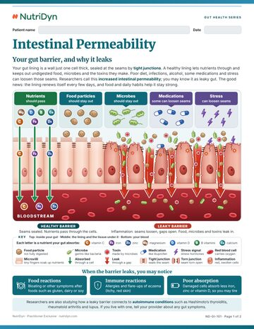
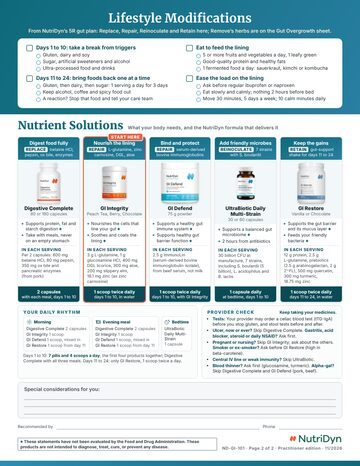
ND-GI-101 Intestinal Permeability 5 NutriDyn picks: Digestive Complete, GI Integrity, GI Defend, UltraBiotic Daily Multi-Strain, GI Restore.
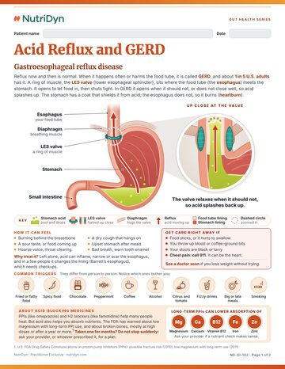
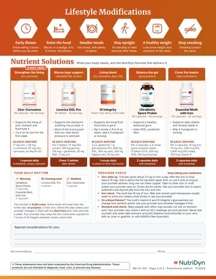
ND-GI-102 Acid Reflux and GERD 5 NutriDyn picks: Zinc-Carnosine, Licorice DGL Pro, GI Integrity, UltraBiotic Spore Probio, Essential Multi with Iron.
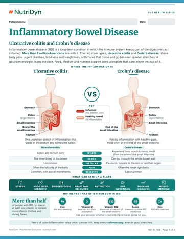
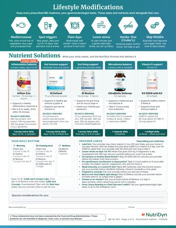
ND-GI-103 Inflammatory Bowel Disease 5 NutriDyn picks: Inflam-Eze, GI Defend, GI Restore, UltraBiotic Defense, D3 5000 with K2.
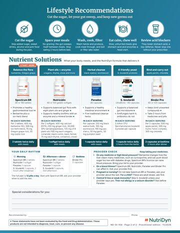
ND-GI-104 Gut Overgrowth 5 NutriDyn picks: Spectrum BR, Nutricidin, Paradex, S. boulardii, Binder Pro.
4 sheets 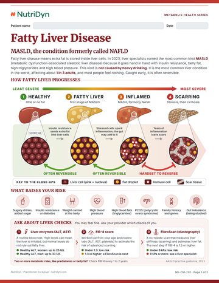
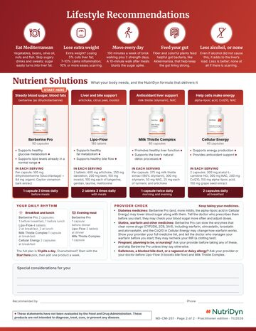
ND-CM-201 Fatty Liver Disease 4 NutriDyn picks: Berberine Pro, Lipo-Flow, Milk Thistle Complex, Cellular Energy.
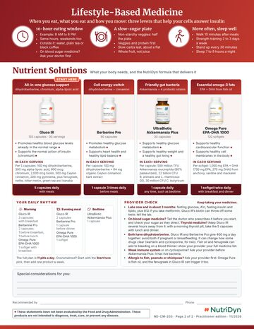
ND-CM-203 Understanding Insulin Resistance 4 NutriDyn picks: Gluco IR, Berberine Pro, UltraBiotic Akkermansia Plus, Omega Pure EPA-DHA 1000.
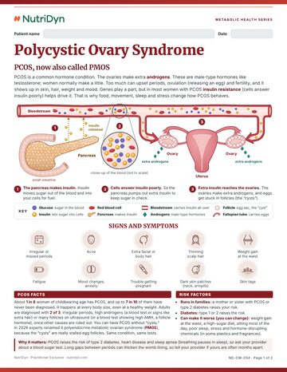
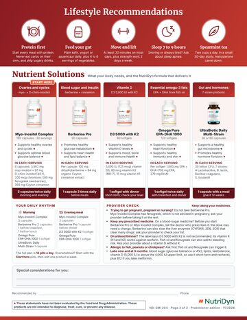
ND-CM-204 Polycystic Ovary Syndrome 5 NutriDyn picks: Myo-Inositol Complex, Berberine Pro, D3 5000 with K2, Omega Pure EPA-DHA 1000, UltraBiotic Daily Multi-Strain .
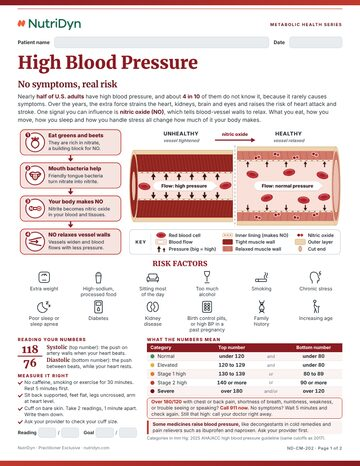
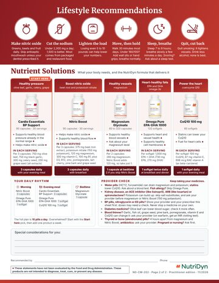
ND-CM-202 High Blood Pressure 5 NutriDyn picks: Cardio Essentials BP Support, Nitric Boost, Magnesium Glycinate, Omega Pure EPA-DHA 1000, CoQ10 100 mg.
2 sheets 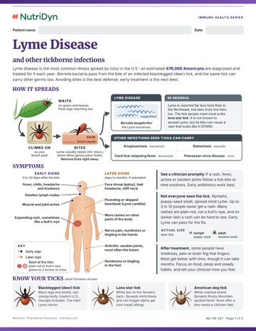
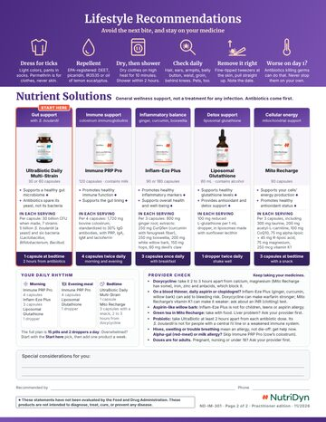
ND-IM-301 Lyme Disease 5 NutriDyn picks: UltraBiotic Daily Multi-Strain, Immune PRP Pro, Inflam-Eze Plus, Liposomal Glutathione, Mito Recharge.
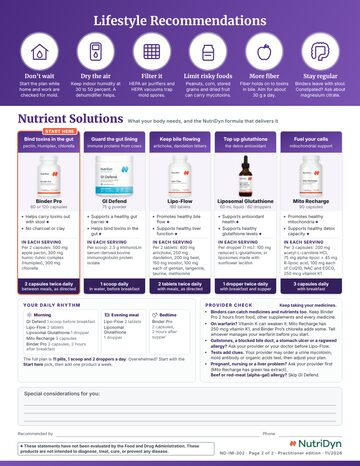
ND-IM-302 Mold Illness 5 NutriDyn picks: Binder Pro, GI Defend, Lipo-Flow, Liposomal Glutathione, Mito Recharge.
2 sheets 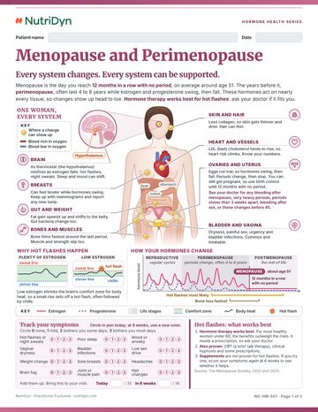
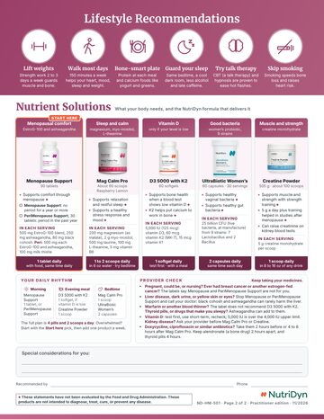
ND-HM-501 Menopause and Perimenopause 5 NutriDyn picks: Menopause Support, Mag Calm Pro, D3 5000 with K2, UltraBiotic Women’s, Creatine Powder.
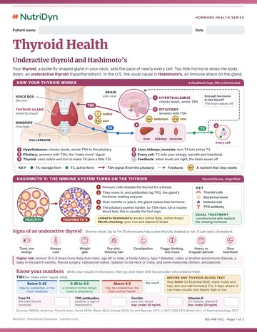
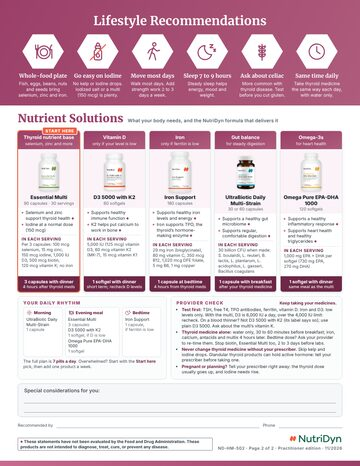
ND-HM-502 Thyroid Health 5 NutriDyn picks: Essential Multi, D3 5000 with K2, Iron Support, UltraBiotic Daily Multi-Strain, Omega Pure EPA-DHA 1000.
4 sheets 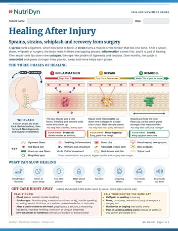
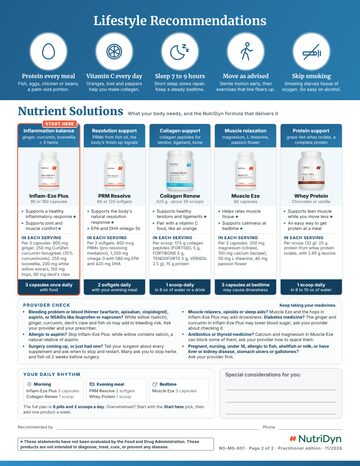
ND-MS-601 Healing After Injury 5 NutriDyn picks: Inflam-Eze Plus, PRM Resolve, Collagen Renew, Muscle Eze, Whey Protein.
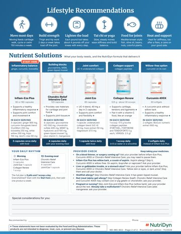
ND-MS-602 Joint Pain and Osteoarthritis 5 NutriDyn picks: Inflam-Eze Plus, Chondro-Relief Intensive Care, Joint Eze, Collagen Renew, Curcumin 400X.
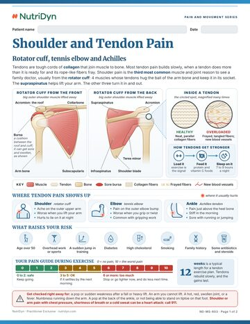
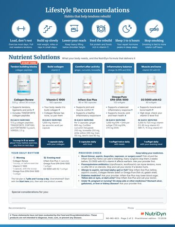
ND-MS-603 Shoulder and Tendon Pain 5 NutriDyn picks: Collagen Renew, Vitamin C 1000, Inflam-Eze Plus, Omega Pure EPA-DHA 1000, D3 5000 with K2.
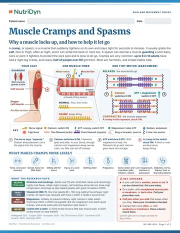
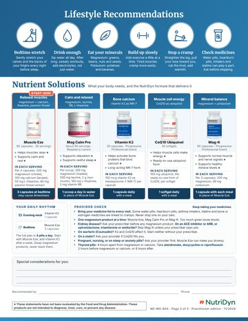
ND-MS-604 Muscle Cramps and Spasms 5 NutriDyn picks: Muscle Eze, Mag Calm Pro, Vitamin K2, CoQ10 Ubiquinol, Mag-K.
2 sheets 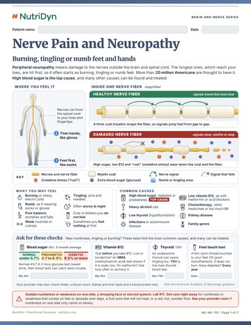
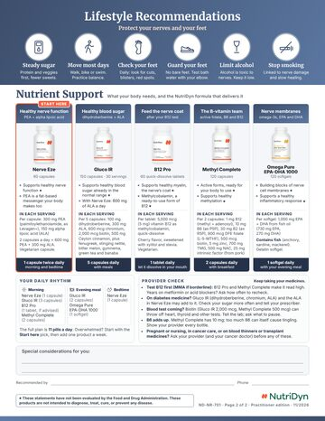
ND-NR-701 Nerve Pain and Neuropathy 5 NutriDyn picks: Nerve Eze, Gluco IR, B12 Pro, Methyl Complete, Omega Pure EPA-DHA 1000.
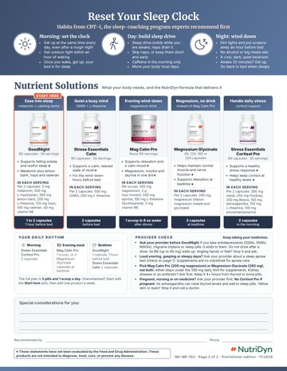
ND-NR-702 Better Sleep 5 NutriDyn picks: GoodNight, Stress Essentials Calm, Mag Calm Pro, Magnesium Glycinate, Stress Essentials Cortisol Pro.
1 sheet ND-EN-801 Stress and Cortisol 5 NutriDyn picks: Stress Essentials Cortisol Pro, Stress Essentials Balance, Stress Essentials Calm, Mag Calm Pro, Stress Essentials Adrenal Renew.
Pharmacy edition for compounding and retail pharmacies. The back page says “Pharmacist check”.
All 19 sheets, one PDF 4 sheets 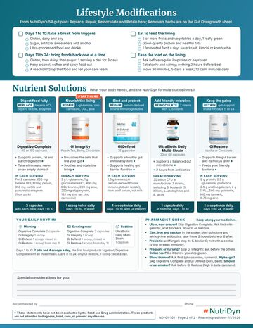
ND-GI-101 Intestinal Permeability 5 NutriDyn picks: Digestive Complete, GI Integrity, GI Defend, UltraBiotic Daily Multi-Strain, GI Restore.
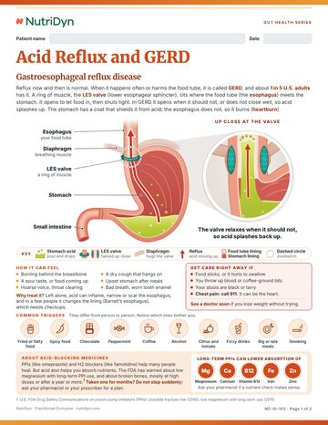
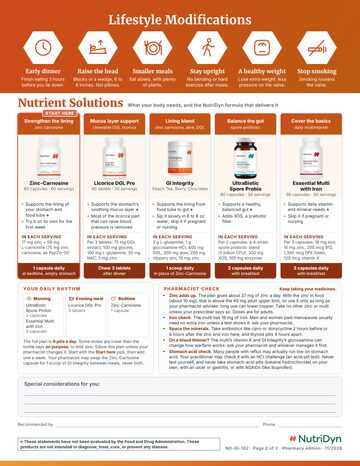
ND-GI-102 Acid Reflux and GERD 5 NutriDyn picks: Zinc-Carnosine, Licorice DGL Pro, GI Integrity, UltraBiotic Spore Probio, Essential Multi with Iron.
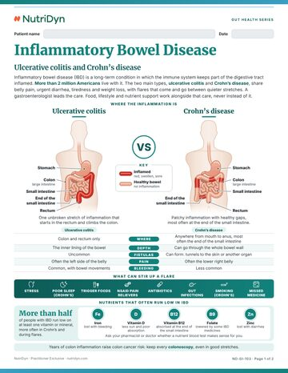
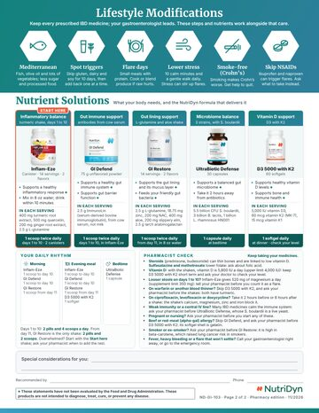
ND-GI-103 Inflammatory Bowel Disease 5 NutriDyn picks: Inflam-Eze, GI Defend, GI Restore, UltraBiotic Defense, D3 5000 with K2.
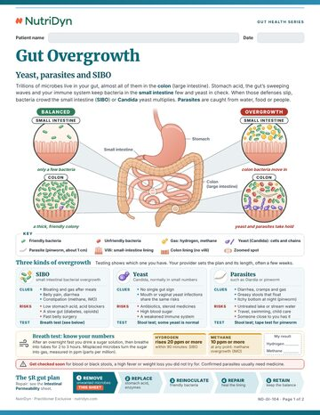
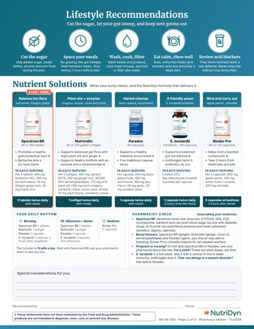
ND-GI-104 Gut Overgrowth 5 NutriDyn picks: Spectrum BR, Nutricidin, Paradex, S. boulardii, Binder Pro.
4 sheets 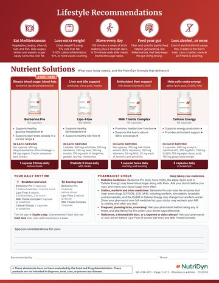
ND-CM-201 Fatty Liver Disease 4 NutriDyn picks: Berberine Pro, Lipo-Flow, Milk Thistle Complex, Cellular Energy.
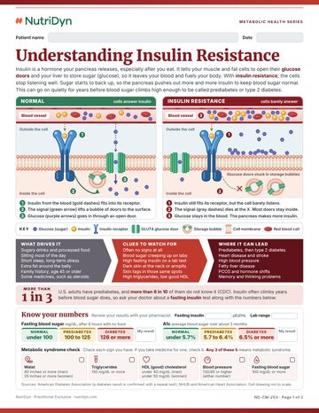
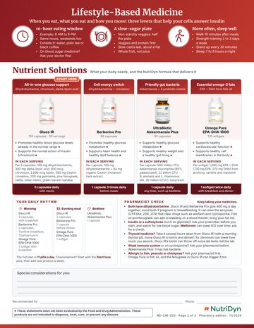
ND-CM-203 Understanding Insulin Resistance 4 NutriDyn picks: Gluco IR, Berberine Pro, UltraBiotic Akkermansia Plus, Omega Pure EPA-DHA 1000.
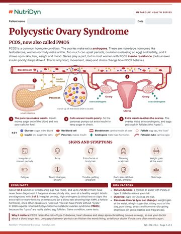
ND-CM-204 Polycystic Ovary Syndrome 5 NutriDyn picks: Myo-Inositol Complex, Berberine Pro, D3 5000 with K2, Omega Pure EPA-DHA 1000, UltraBiotic Daily Multi-Strain .
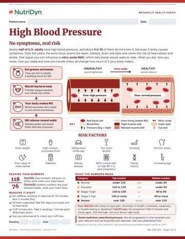
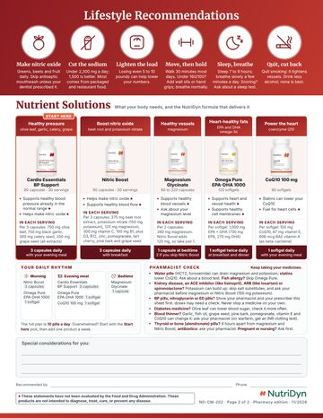
ND-CM-202 High Blood Pressure 5 NutriDyn picks: Cardio Essentials BP Support, Nitric Boost, Magnesium Glycinate, Omega Pure EPA-DHA 1000, CoQ10 100 mg.
2 sheets 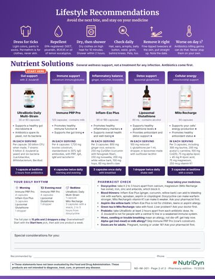
ND-IM-301 Lyme Disease 5 NutriDyn picks: UltraBiotic Daily Multi-Strain, Immune PRP Pro, Inflam-Eze Plus, Liposomal Glutathione, Mito Recharge.
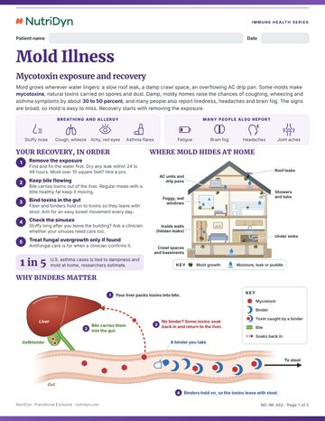
ND-IM-302 Mold Illness 5 NutriDyn picks: Binder Pro, GI Defend, Lipo-Flow, Liposomal Glutathione, Mito Recharge.
2 sheets 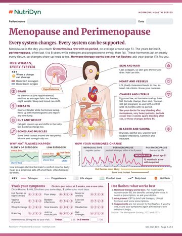
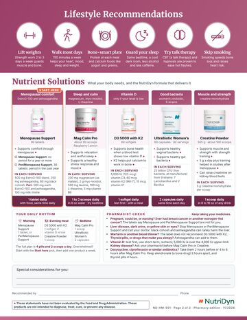
ND-HM-501 Menopause and Perimenopause 5 NutriDyn picks: Menopause Support, Mag Calm Pro, D3 5000 with K2, UltraBiotic Women’s, Creatine Powder.
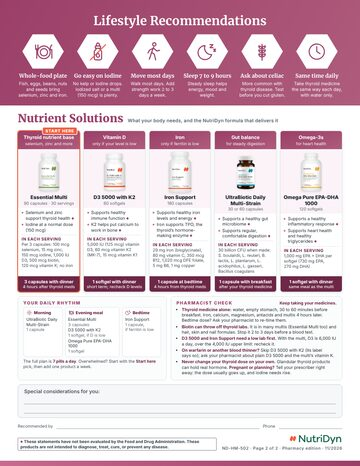
ND-HM-502 Thyroid Health 5 NutriDyn picks: Essential Multi, D3 5000 with K2, Iron Support, UltraBiotic Daily Multi-Strain, Omega Pure EPA-DHA 1000.
4 sheets ND-MS-601 Healing After Injury 5 NutriDyn picks: Inflam-Eze Plus, PRM Resolve, Collagen Renew, Muscle Eze, Whey Protein.
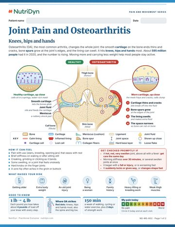
ND-MS-602 Joint Pain and Osteoarthritis 5 NutriDyn picks: Inflam-Eze Plus, Chondro-Relief Intensive Care, Joint Eze, Collagen Renew, Curcumin 400X.
ND-MS-603 Shoulder and Tendon Pain 5 NutriDyn picks: Collagen Renew, Vitamin C 1000, Inflam-Eze Plus, Omega Pure EPA-DHA 1000, D3 5000 with K2.
ND-MS-604 Muscle Cramps and Spasms 5 NutriDyn picks: Muscle Eze, Mag Calm Pro, Vitamin K2, CoQ10 Ubiquinol, Mag-K.
2 sheets ND-NR-701 Nerve Pain and Neuropathy 5 NutriDyn picks: Nerve Eze, Gluco IR, B12 Pro, Methyl Complete, Omega Pure EPA-DHA 1000.
ND-NR-702 Better Sleep 5 NutriDyn picks: GoodNight, Stress Essentials Calm, Mag Calm Pro, Magnesium Glycinate, Stress Essentials Cortisol Pro.
1 sheet ND-EN-801 Stress and Cortisol 5 NutriDyn picks: Stress Essentials Cortisol Pro, Stress Essentials Balance, Stress Essentials Calm, Mag Calm Pro, Stress Essentials Adrenal Renew.
How to use them 1 Pick the sheet Match it to the conversation. Write the patient's name and the date at the top.
2 Tick and circle On the back, tick the lifestyle steps that apply and circle the products you recommend.
3 Make it theirs Write the dose and anything specific under Special considerations . The Start here pick is the one to begin with.
4 Send them to the bottle Product photos and names link to the product page in the web and PDF versions.
Built from NutriDyn label facts and NutriDyn protocols. Condition facts from the CDC, WHO, FDA, AASLD, ACG and
AHA/ACC. Every product statement is structure/function and carries the FDA disclaimer. Generated by
handouts/conditions/build/build.py; do not hand-edit.